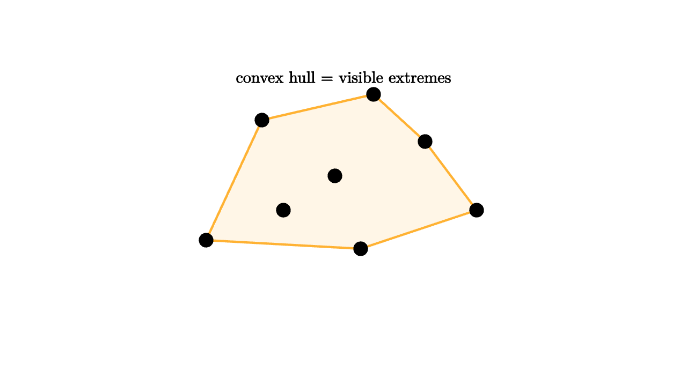

A convex hull is the tight rubber band around a set of points. It keeps the extreme points and discards the points that could never touch a supporting line. Graphics uses this idea constantly: broad-phase collision tests, silhouette approximation, mesh simplification, layout envelopes, and bounding volumes all start by asking what part of a shape can be seen from the outside.

source
let soft = |col, amount| lerp(WHITE, col, amount)
mesh pts = [
center{1.6l + 0.55d} Circle(0.08),
center{0.95l + 0.85u} Circle(0.08),
center{0.1l + 0.2u} Circle(0.08),
center{0.2r + 0.65d} Circle(0.08),
center{0.95r + 0.6u} Circle(0.08),
center{1.55r + 0.2d} Circle(0.08),
center{0.35r + 1.15u} Circle(0.08),
center{0.7l + 0.2d} Circle(0.08)
]
mesh hull = [
fill{soft(ORANGE, 0.12)} stroke{ORANGE, 2.5}
Polygon([1.6l + 0.55d, 0.95l + 0.85u, 0.35r + 1.15u, 0.95r + 0.6u, 1.55r + 0.2d, 0.2r + 0.65d]),
color{BLACK} pts,
center{1.35u} Text("convex hull = visible extremes", 0.68)
]The standard hull algorithms differ in bookkeeping, but they share one predicate: orientation. A scan walks around candidate points and removes a middle point whenever the turn bends the wrong way. This is why a hull is a useful second lesson after the left-turn test. It shows how a single local rule creates a global boundary.
One way to feel the hull is to imagine rotating a ruler around the cloud. Whenever the ruler touches the cloud without cutting through it, the touched point is an extreme point. Interior points may be important for density or texture, yet they cannot define the outside envelope. A convex hull keeps only the points that can win some direction's "farthest along this axis" contest.
The convexity condition is also a promise. If two points are inside the hull, then every point on the straight segment between them is inside as well. This is why convex objects are easier for algorithms. A line enters and leaves at most once, separating axes work cleanly, and optimization over the shape has fewer geometric surprises.
For graphics, the hull is often a cheap substitute for the original object. A complicated sprite, font glyph, or mesh may have thousands of vertices. Its hull may have twenty. If two hulls are far apart, the original objects cannot collide, so the engine can skip expensive narrow-phase work.
source
let soft = |col, amount| lerp(WHITE, col, amount)
"Points"
mesh cloud = [
center{1.5l + 0.5d} fill{BLACK} Circle(0.07),
center{1.0l + 0.7u} fill{BLACK} Circle(0.07),
center{0.35l + 0.15u} fill{BLACK} Circle(0.07),
center{0.2r + 0.55d} fill{BLACK} Circle(0.07),
center{0.9r + 0.6u} fill{BLACK} Circle(0.07),
center{1.45r + 0.15d} fill{BLACK} Circle(0.07),
center{0.3r + 1.05u} fill{BLACK} Circle(0.07),
center{1.15d} Text("start with samples", 0.62)
]
play Grow(0.7)
"Candidate Boundary"
mesh band =
fill{soft(BLUE, 0.12)} stroke{BLUE, 2.5}
Polygon([1.5l + 0.5d, 1.0l + 0.7u, 0.3r + 1.05u, 0.9r + 0.6u, 1.45r + 0.15d, 0.2r + 0.55d])
cloud = [cloud, center{1.25u} Text("orientation rejects inward turns", 0.62)]
play [Grow(0.6, [&band]), Fade(0.4, [&cloud])]
"Broad Phase"
band = shift{0.4l} band
mesh other = shift{0.9r} fill{soft(GREEN, 0.14)} stroke{GREEN, 2.5} Square(1.0)
mesh note = center{1.15d} Text("simple hulls answer first", 0.62)
play [Lerp(0.9, [&band]), Grow(0.6, [&other, ¬e])]The hull also teaches a useful engineering habit. Exact geometry can be saved for the moment when exactness matters. The first pass should reject obvious non-events. A convex envelope gives a conservative promise: if the envelopes do not meet, the objects do not meet. That promise is simple, fast, and mathematically clean.
The lesson to keep: a convex hull is a compressed outside story. It forgets interior detail on purpose, keeping the boundary needed for fast reasoning. In graphics and games, that kind of controlled forgetting is a feature, because it lets expensive exact tests wait until the cheap outer test says they are needed.